In twelve photos, I reflect on 2022. It was a year of branching out and our plans blossomed, so I choose the Cherry Blossoms in Georgetown as the cover theme.
1. Washington DC: we’re here!
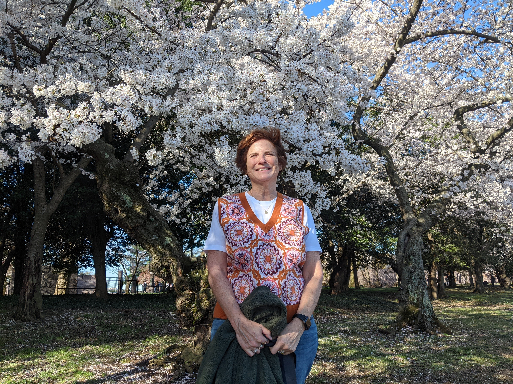 Audrey looks to the future. In 2022, we officially added a second location in Washington DC to our life. Come visit us in Columbia Heights! (We’re there about half the year.)
2. And we’re not happy with the Supreme Court
We made signs and joined the crowds gathered at the Washington Monument to protest the (then leaked, yet unannounced) Supreme Court decision on Abortion rights. Throughout the year, Audrey engaged in Pro Bono work to contribute to the Abortion rights movement. She enjoying her job at Wilson Sonsini. Oddly, we both have offices in Washington, DC and they are a stone’s throw apart.
3. Micah (finally) does the Lion walk
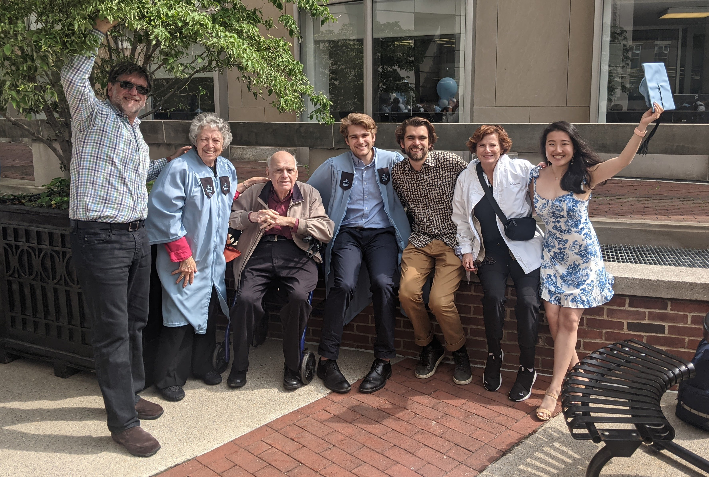 Two years late, Columbia held a commencement for the Class of 2020. It was a great occasion for the family to come together and roar like a Columbia Lion in NYC. Micah is currently enjoying graduate school at Berkeley, where he is engineering integrated circuits for biotech devices.
4. and Lucy does the Duck walk
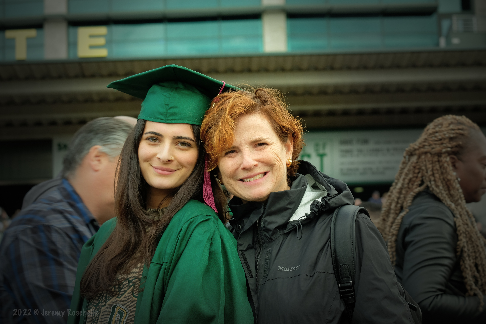 Lucy celebrated graduating from the University of Oregon, and Audrey was ever proud of her Duck! Later in the summer, Lucy moved to Los Angeles and she and Sarah now both live and work in Santa Monica, a few blocks apart from each other.
5. Clams beware
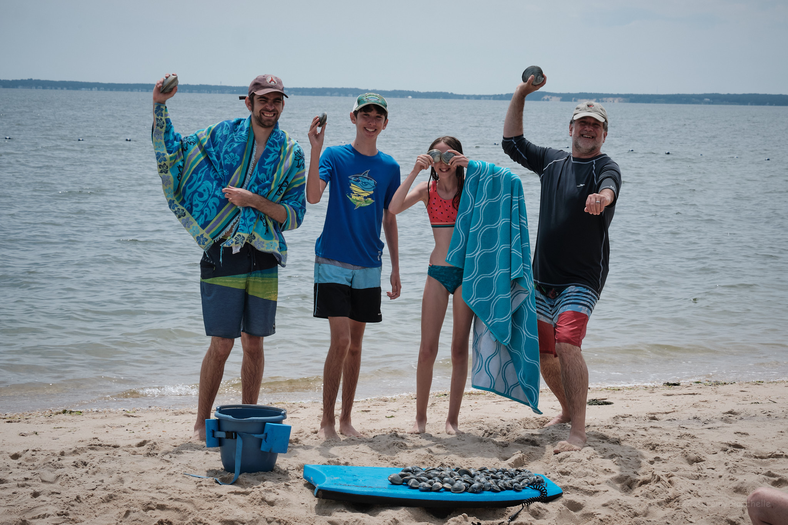 In July, the extended Roschelle family came together to celebrate Jacob’s Birthday in Mattituck, Long Island, New York. The annual clam harvest was a huge success, with over 100 clams raked up from the shallow waters.
6. Backpacking trip to Lake Ediza
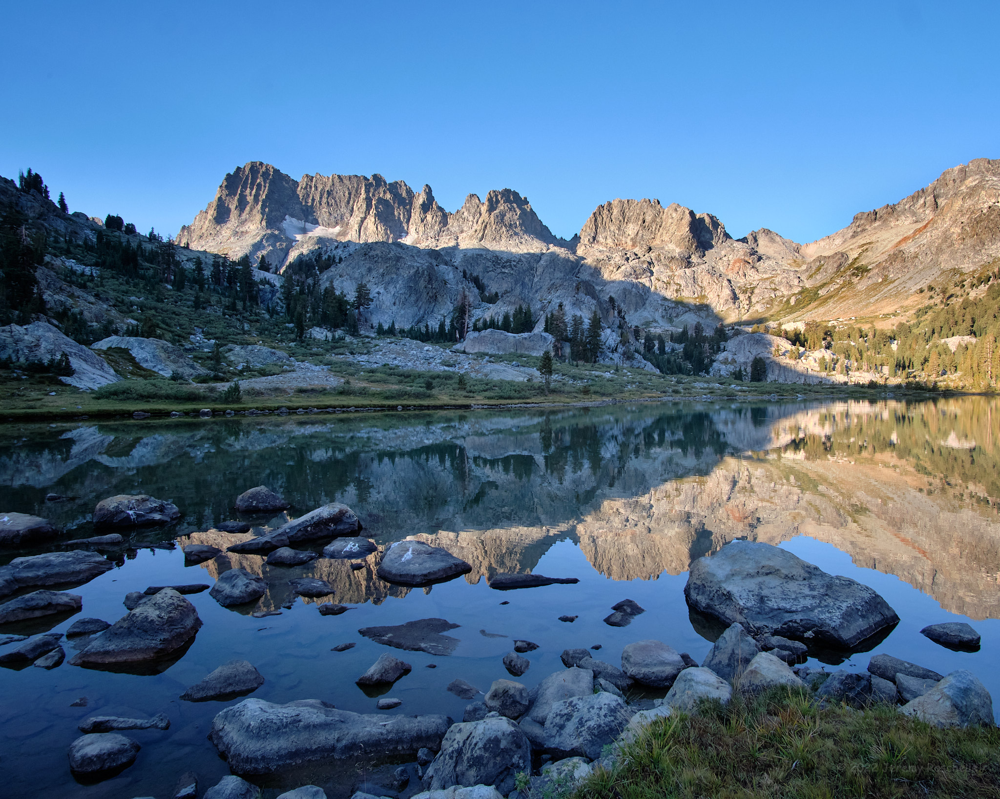 In August, Micah and I had a wonderful trip to Lake Ediza – continuing the annual backpacking tradition. There are lots of beautiful photos of the trip. As I mentioned, Micah is in graduate school at Berkeley – which is relevant because I did this same trip to Lake Ediza when I was in graduate school at Berkeley, many moons ago.
7. Dogs in Airports
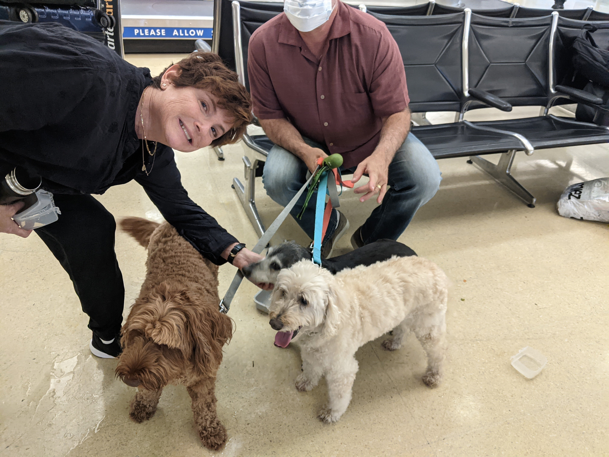 Soon enough it was September and time to head back to Washington, DC. On the way to the airport, we had a rude surprise – our planned flight to Newark would not be taking dogs aboard. Audrey worked the phones quickly, and before our car even got to San Francisco, she had rebooked us for Washington, DC. Here the dogs are arriving in good health at the terminal. The ever kind cousin Eddie Goldberger was there to meet us.
8. Audrey and the Supremes
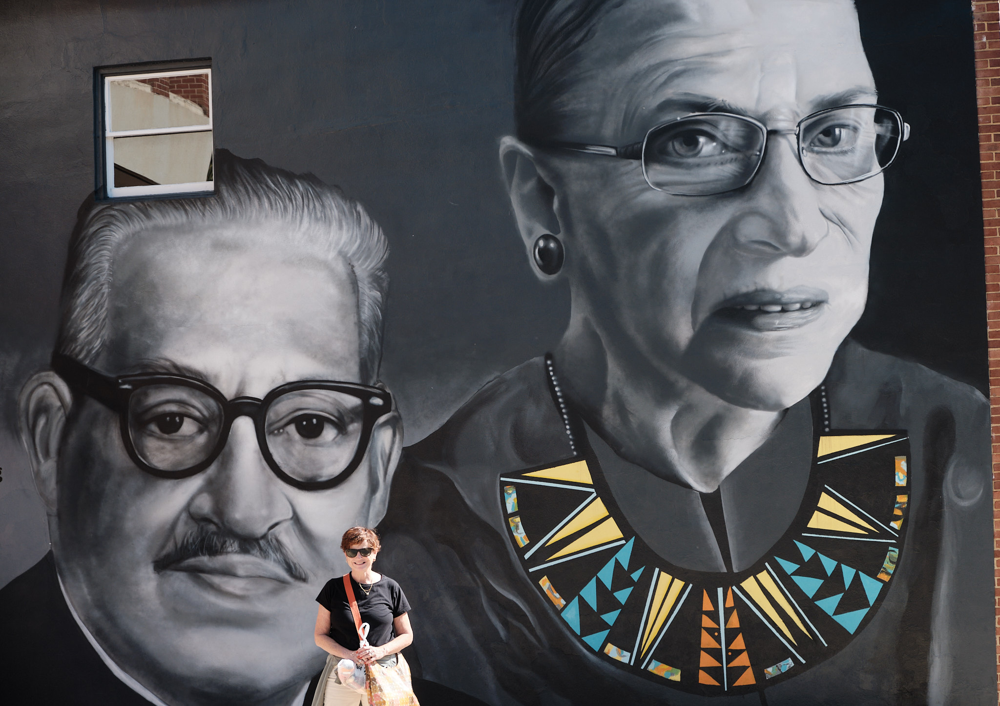 We enjoyed some great day trips around Washington DC. Here’s Audrey in Annapolis with a mural of her heros. We also enjoy the contrast with our California life – where we live in DC is super walkable: should we have Pho tonight? Laos cuisine? Indian? Mexican? Malaysian? BBQ? Ethiopian? Thai? Speaking of walks, one day in Rock Creek Park we crossed paths (silently) with Justice Sonia Sotomayor.
9. Autumn Leaves
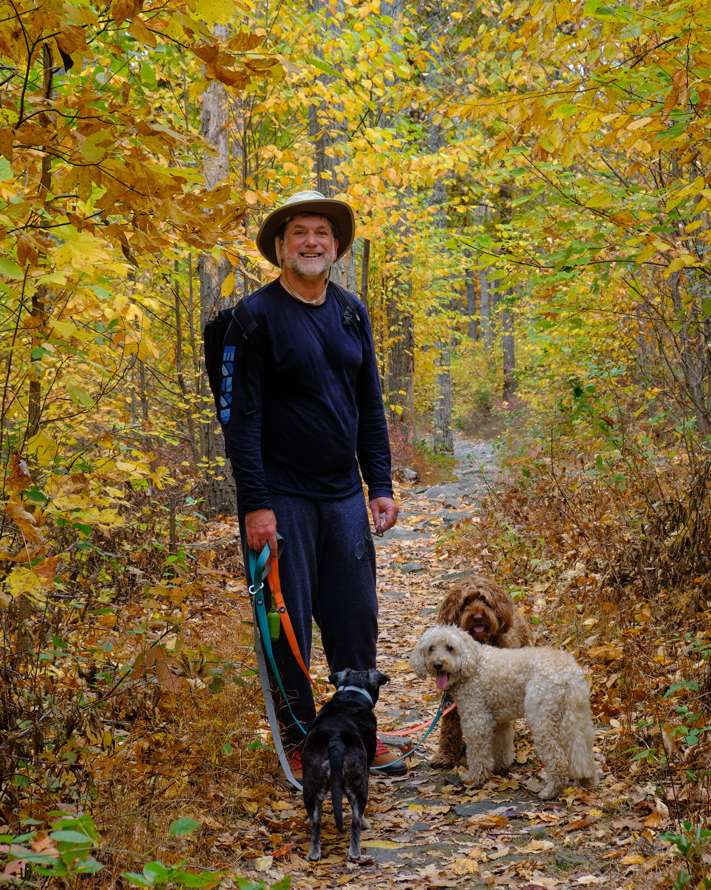 It was a beautiful fall in Washington DC, and one weekend we ventured to Cacoctin Mountain, about an hour north. Lots of beautiful photos. We had beautiful leaves every weekend for about a month.
10. Jacob calls the Rocky Mountains home
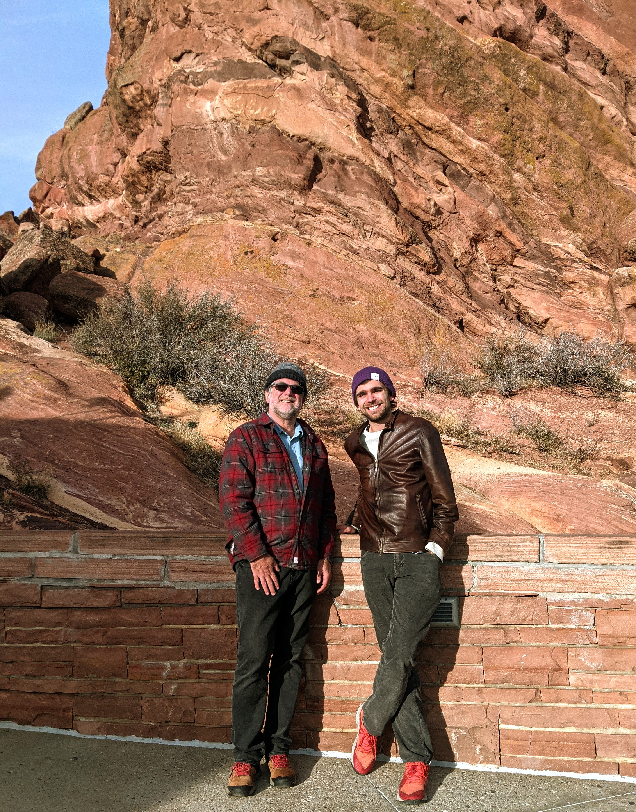 Jacob graduated from Colorado College two years ago. This summer he decided to live in Denver, where he is teaching in a private high school. And skiing lots. I enjoyed visiting him in Denver, and we had a fun day hiking around Red Rocks.
11. Retreat in Albuquerque
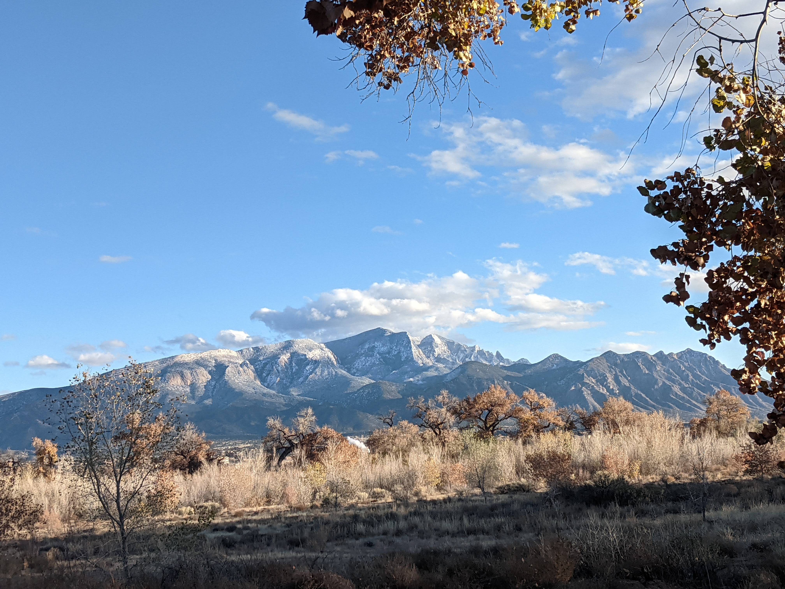 I’m enjoying my work at Digital Promise. After two years of not seeing many people in person, our 175-person staff gathered for a retreat in Albuquerque, New Mexico. One of the most exciting things this year was that we were awarded a $20 million gift from Mackenzie Scott.
12. Family in Washington DC
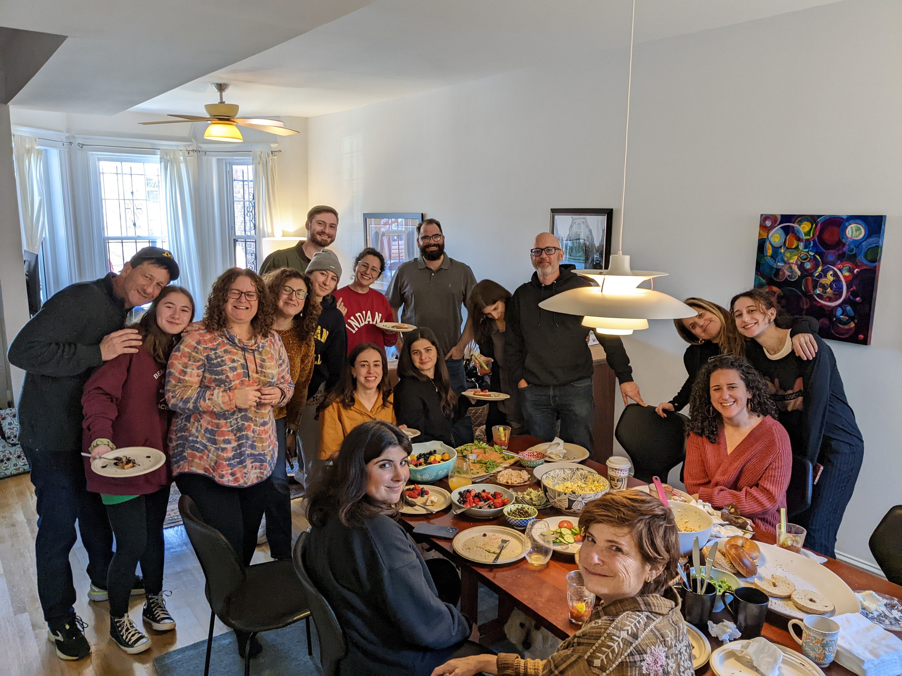 Well, this final photo makes obvious why we decided to live also in Washington DC: FAMILY! Here is all of Audrey’s side of the family, enjoying a Saturday-after-Thanksgiving brunch in our house. We also had wonderful visits from my side of the family, and several trips to New Jersey (where I grew up) to boot. Our decision to split time between California and Washington DC has turned out to be a great one!
And now we’re relaxing at the close of the year in California. Behind our house, Windy Hill rises to 1900 feet. From the top of Windy Hill, we sometimes get wonderful sunsets. This one seems to say Happy New Year and Happy Trails to You!
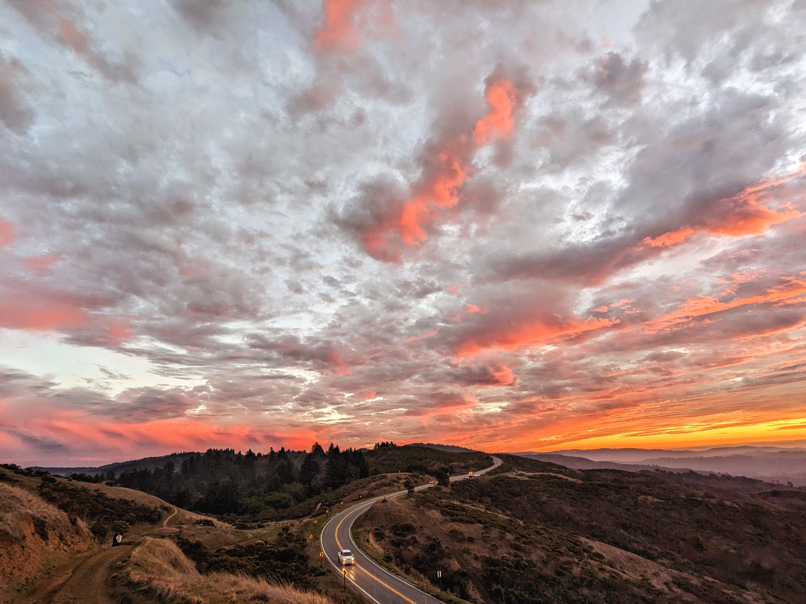